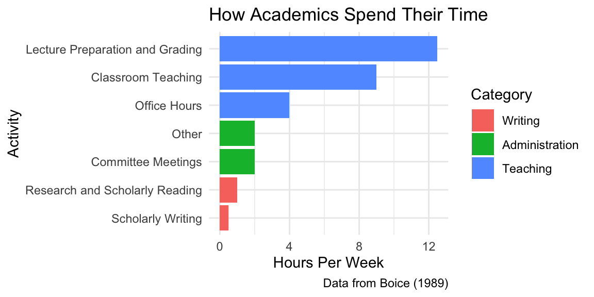
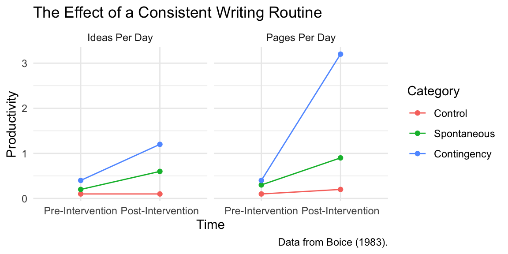

Daily Writing
Some notes on a key academic habit
writing
In this post, I discuss why I like to write everyday (with caveats).
I try to write everyday.1
1 See lots of caveats below!
By “writing,” I mean “pushing the paper closest to publication just a little bit closer.” I want to think about the next step on the journey to the published paper and do it. According to this loose definition of writing, it might involve data collection, data analysis, creating slides, or even writing and polishing text. It might involve organization, planning, or learning new skills. It excludes any tasks that aren’t necessary to complete the project.
By “everyday,” I mean at least every weekday, probably at the same time every day and probably first thing in the morning. For better or worse, academics are evaluated by their research productivity.
Urgency and Importance
President Eisenhower famously characterized his duties: “I have two kinds of problems, the urgent and the important. The urgent are not important, and the important are never urgent.”
Following Eisenhower’s Box, we might assign degrees of urgency and importance to tasks in academic tasks. In graduate school, I had teaching responsibilities, RA duties, readings for seminars, homework for methods classes, preliminary exams, and administrative tasks. All of these tasks are important. They must be completed. They must be completed well. Yet I was evaluated largely on my papers. As a faculty member, little has changed.
Writing is important, but writing never quite becomes urgent. It’s easy to put off writing to prepare a lecture (or write a blog post).
The Evidence
Robert Boice studied academic productivity carefully. A couple of his studies provide some evidence for my strategy to write every day.
First, he assessed how early-career academics spend their time. The figure below shows the results. Notice that these faculty spend more time in committee meetings (2 hrs.) than writing (1.5 hours).
Second, Boice conducted an experiment to assess the effect of writing strategies.
Boice randomly divided 27 academics into three groups:2
2 This is a small sample, but it supports my claim so it’s okay.
- The control group agreed to defer all but the most urgent writing for ten weeks.
- The spontaneous group agreed write when they felt like it.
- The contingency group agreed to donate to an anti-charity if they failed to write every day.
The figure below shows that regular writing routine increase production of both pages and ideas. Notice that the spontaneous writers barely produced more ideas and pages than the group trying to avoid writing.

I find these results compelling, but note that Helen Sword urges some caution.
How I Do It
Everyone is different, and my own approach has evolved over time. Here are the key ingredients (for me):
- Write for two hours at a regular time. Consistency is key.3
- Avoid writing outside this window. Set your window so that your window is “enough.”
- Take breaks. I take long breaks from writing. But these are intentional and planned.4
- Family permitting, I think it’s helpful to spend a little while pushing the projects forward on the weekends, just to keep the momentum up.5
3 Two hours works really well for me. My productivity degrades quickly after two hours, so it’s best to move on to less taxing tasks. But it takes me a while to get warmed up, so I need to keep moving while I’ve got momentum.
4 An unfortunate outcome is not writing and being stressed about not writing.
5 Just 15 minutes is great. This slot is perfect for proof-reading.
I admit that I deviate from the strategy above (and not always intentionally). But I’ve been at this long enough to know that a regular routine works really well for me.
What if you’re not ready to write yet?
It’s my view that PhD students should write every day, from the first day of their first semester (remember that I have a broad definition of “write”). Most students need some time before they’re ready to jump into the technical details a solo project, but there are always things to do.
If you can’t identify a specific task to work on, here are some resources to help you brainstorm.
- Plan and organize. Start by reading How to Write a Lot. Perhaps read Getting Things Done. Perhaps read Air & Light & Time & Space or Writing for Social Scientists.
- Read “Publication, Publication” and the updates.
- Before you can jump into a project, you need to know the literature. Spend some writing time exploring literatures that you might want to contribute to. What interests you most? The Annual Review of Political Science is a valuable resource.
- Once you have a specific topic of interest, you need to learn that literature. You can spend dozens of “writing” sessions reading and taking notes. I strongly encourage you to read and take notes systematically, as Raul Pacheco-Vega suggests using a spreadsheet, Elaine Campbell suggests a similar method, and Katherine Firth suggests a using Cornell notes.
- Tanya Golash-Boza lists ten ways to write everyday if you’ve got a paper in-progress.